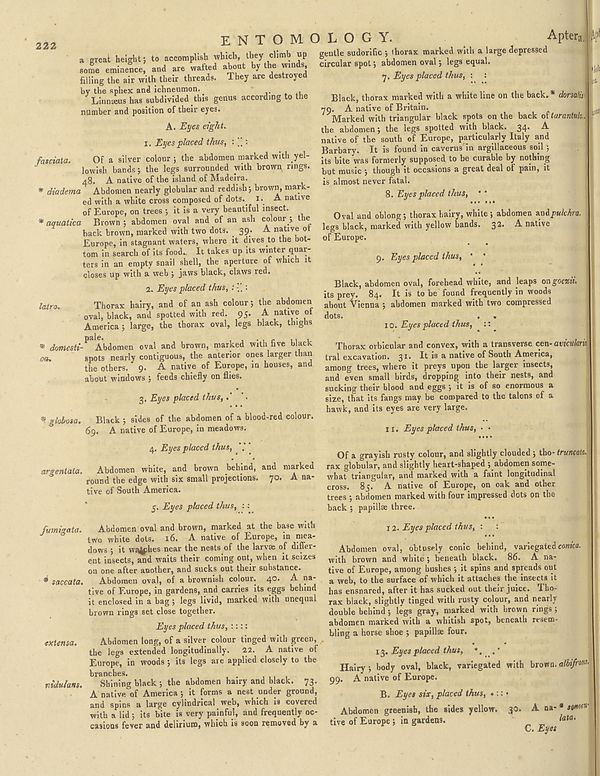

Scan ID britannica:309f765b1ecc83e0a7f7762e44b4a927a7555443:train:261
Image SHA-256 881563669b04b487e86fd839d3c3ed37df89ebbf558afc819085fdba215bff61
Status: ok. Running header: none (none). Removed page furniture: Page-header: 222, Page-footer: C. Eye.
PDF · raw Parse reply · LaTeX
Entries: ENTOMOLOGY

| # | Class | Box | Parse 3.5 | Used text | Source |
|---|---|---|---|---|---|
| 1 | Title | [0.3643, 0.0359, 0.6631, 0.0633] | ENTOMOLOGY. | ENTOMOLOGY. | super_vl |
| 2 | Caption | [0.9062, 0.0352, 0.9863, 0.0602] | Aptera | Aptera. | super_vl |
| 3 | Text | [0.1309, 0.0641, 0.5146, 0.1234] | a great height; to accomplish which, they climb up some eminence, and are walked about by the winds, filling the air with their threads. They are destroyed by the spikes and ichneumon. | a great height; to accomplish which, they climb up some eminence, and are wasted about by the winds, filling the air with their threads. They are destroyed by the sphinx and ichneumon. | super_vl |
| 4 | Text | [0.1338, 0.1172, 0.5156, 0.1508] | Linnaeus has subdivided this genus according to the number and position of their eyes: | by the sphinx and ichneumon. Linnaeus has subdivided this genus according to the number and position of their eyes. | super_vl |
| 5 | Section-header | [0.2705, 0.1531, 0.376, 0.1719] | **A.** _Eyes eight._ | A. Eyes eight. | super_vl |
| 6 | Section-header | [0.2402, 0.175, 0.4121, 0.1922] | _1. Eyes placed thus_, : | 1. Eyes placed thus, : : : | super_vl |
| 7 | List-item | [0.0586, 0.1953, 0.5176, 0.2367] | fasnata. Of a silver color; the abdomen marked with yel- lowish bandes; the legs surrounded with brown rings. 49. A native of the island of Malachi | fasciata. Of a silver colour; the abdomen marked with yellowish bands; the legs surrounded with brown rings. 48. A native of the island of Madeira. | super_vl |
| 8 | List-item | [0.0605, 0.2352, 0.5195, 0.2797] | * diadema Abdomen nearly globale and reddish; brown, mark- ed with a white cross composed of dots. 1. A native of Europe, on trees; it is a very beautiful insect. | 48. A native of the island of Madeira. diadema Abdomen nearly globular and reddish; brown, marked with a white cross composed of dots. 1. A native of Europe, on trees; it is a very beautiful insect. | super_vl |
| 9 | List-item | [0.0615, 0.2742, 0.5234, 0.3609] | _aquatica_ Browny abbonen ovat and of an ash colour; the back brown, marked with two dots. 30. A native of Europe, in stagnant waters, where it direct to the bottom in search of the area. It takes up to winter quar-ters in an empty snail shell, the aperture of which it closes up with a web; jaws black, claws red. | aquatica Brown; abdomen oval and of an ash colour; the back brown, marked with two dots. 39. A native of Europe, in stagnant waters, where it dives to the bottom in search of its food. It takes up its winter quarters in an empty snail shell, the aperture of which it closes up with a web; jaws black, claws red. | super_vl |
| 10 | Section-header | [0.2441, 0.3641, 0.4297, 0.3695] | ## 2. Eyes placed thus, : | ## 2. Eyes placed thus, : | parse_fallback · box_too_small |
| 11 | Text | [0.0625, 0.3836, 0.0859, 0.3828] | _latro._ | _latro._ | parse_fallback · box_too_small |
| 12 | List-item | [0.1348, 0.382, 0.5205, 0.4367] | Thorax hairy, and of an ash colour; the abdomen oval, black, and spotted with red. 95. A native of America; large, the thorax oval, legs black, thighs pale. | Thorax hairy, and of an ash colour; the abdomen oval, black, and spotted with red. 95. A native of America; large, the thorax oval, legs black, thighs pale. | super_vl |
| 13 | Text | [0.0635, 0.4359, 0.2979, 0.4773] | _domestic._ | domestica. Abdomen oval and b spots nearly contiguous the others. 9. A nat | super_vl · expanded_beyond_parse |
| 14 | Text | [0.0645, 0.4789, 0.5225, 0.4969] | _obs._ | the others. 9. A native of Europe, in houses, and about windows; feeds chiefly on flies. | super_vl · expanded_beyond_parse |
| 15 | Section-header | [0.2295, 0.5023, 0.4053, 0.525] | ## 3. Eyes placed thus, | 3. Eyes placed thus, | super_vl |
| 16 | List-item | [0.0654, 0.5289, 0.5215, 0.5477] | _globosa._ Black; sides of the abdomen of a blood-red colour. | globosa. Black; sides of the abdomen of a blood-red colour. | super_vl |
| 17 | List-item | [0.1416, 0.5453, 0.4111, 0.5617] | 99. A native of Europe, in meadows. | 69. A native of Europe, in meadows. | super_vl |
| 18 | Section-header | [0.2461, 0.5672, 0.4229, 0.5883] | ## 4. Eyes placed thus, | 4. Eyes placed thus, | super_vl |
| 19 | Text | [0.0664, 0.5961, 0.1436, 0.5938] | _argentata._ | _argentata._ | parse_fallback · box_too_small |
| 20 | Text | [0.1387, 0.5945, 0.5244, 0.6406] | Abdown white, and brown behind, and marked round the edge with six small projections. 70. A native of South America. | Abdomen white, and brown behind, and marked round the edge with six small projections. 70. A native of South America. | super_vl |
| 21 | Section-header | [0.251, 0.6438, 0.4209, 0.6609] | ## 5. Eyes placed thus, : | 5. Eyes placed thus, : : | super_vl |
| 22 | Text | [0.0674, 0.6719, 0.1426, 0.6922] | fumigate. | fumigata. | super_vl |
| 23 | List-item | [0.1396, 0.668, 0.5254, 0.7398] | Abdenom oval and brown, marked at the base with two white dots. 16. A native of Europe, in meadows; it washes near the nest of the larva of different insects, and make their coming out, when it leaves on one after another, and sucks out their substance. | Abdomen oval and brown, marked at the base with two white dots. 16. A native of Europe, in meadows; it watches near the nests of the larvee of different insects, and waits their coming out, when it seizes on one after another, and sucks out their substance. | super_vl |
| 24 | Text | [0.0684, 0.7414, 0.1445, 0.7711] | _saccata._ | saccata. | super_vl |
| 25 | List-item | [0.1406, 0.7383, 0.5293, 0.7969] | Abdomoval, of a brownial, colour, 40. A native of Europe, age gardens, and carries its eggs behind it enclosed in a bag; legs livid, marked with unequal brown rings set close together. | on one after another, and sucks out their substance. Abdomen oval, of a brownish colour. 40. A native of Europe, in gardens, and carries its eggs behind it enclosed in a bag; legs livid, marked with unequal brown rings set close together. | super_vl |
| 26 | Section-header | [0.2764, 0.7984, 0.4131, 0.8141] | _Eyes placed thus, :_ | Eyes placed thus, : : : : | super_vl |
| 27 | Text | [0.0703, 0.8211, 0.1318, 0.8352] | _extensa._ | extensa. | super_vl |
| 28 | List-item | [0.1377, 0.8156, 0.5303, 0.8719] | Abdemon long, of a silver colour tinged with green, the legs extended longitudinally. 22. A native of Europe, in woods; its legs are applied closely to the branches. | Abdomen long, of a silver colour tinged with green, the legs extended longitudinally. 22. A native of Europe, in woods; its legs are applied closely to the branches. | super_vl |
| 29 | Text | [0.0723, 0.8727, 0.1328, 0.8859] | _ridulana._ | ridulans. | super_vl |
| 30 | List-item | [0.0752, 0.8742, 0.5283, 0.9437] | _Shining black; the abdomen hairy and black. 73._ A native of America; it forms a nest under ground, and spin as large cylindrical web, which is covered with a id; its bite is very painful, and frequently oc- casions fever and delirium, which is soon removed by a | Shining black; the abdomen hairy and black. 73. A native of America; it forms a nest under ground, and spins a large cylindrical web, which is covered with a lid; its bite is very painful, and frequently occasions fever and delirium, which is soon removed by a | super_vl |
| 31 | Text | [0.5312, 0.057, 0.9131, 0.0883] | gentle suborfics, thorax marked with a large depressed circular spot; abdominal oval; legs equal. | gentle sudorific ; thorax marked with a large depressed circular spot ; abdomen oval ; legs equal. | super_vl |
| 32 | Section-header | [0.6426, 0.0898, 0.8096, 0.1094] | ## 9. Eyes placed thus, : | 7. Eyes placed thus, : : | super_vl |
| 33 | Text | [0.5459, 0.1133, 0.9756, 0.1461] | Black, thorax marked with a white line on the back\* density 79. A native of Britain. | Black, thorax marked with a white line on the back.* dorsalis 79. A native of Britain. | super_vl |
| 34 | Text | [0.5332, 0.1422, 0.9746, 0.2391] | Marked with triangular black spots on the back of torantsis, the abdomen; the legs spotted with black. 34. A native of the south of Europe, particularly Italy and Barbary. It is found in screens in agriculture soil; its bite was formerly supposed to be combble by nothing but remains; though it occasions a great deal of pain, it is almost never fatal. | 79. A native of Britain. Marked with triangular black spots on the back of torantus, the abdomen; the legs spotted with black. 34. A native of the south of Europe, particularly Italy and Barbary. It is found in caverns in argillaceous soil; its bite was formerly supposed to be curable by nothing but music; though it occasions a great deal of pain, it is almost never fatal. | super_vl |
| 35 | Section-header | [0.6436, 0.2422, 0.8262, 0.2625] | ## 8. Eyes placed thus, | 8. Eyes placed thus, | super_vl |
| 36 | Text | [0.5352, 0.2664, 0.9736, 0.3125] | Oval and oblong; thorax hair, white; abdomen and _pakkra_. legs black, marked with yellow bands. 32. A native of Europe. | Oval and oblong; thorax hairy, white; abdomen and pulchra. legs black, marked with yellow bands. 32. A native of Europe. | super_vl |
| 37 | Section-header | [0.625, 0.3211, 0.8076, 0.3438] | ## 9. Eyes placed thus, | 9. Eyes placed thus, | super_vl |
| 38 | Text | [0.5371, 0.3531, 0.9639, 0.4102] | Black, abdominal oval, forehead white, and leaps on gocuit, its prey. 84. It is to be found frequently in woods about Vienna; abdommed with two compressed dots. | Black, abdomen oval, forehead white, and leaps on its prey. 84. It is to be found frequently in woods about Vienna; abdomen marked with two compressed dots. | super_vl |
| 39 | Section-header | [0.6406, 0.4109, 0.8213, 0.4281] | ## 10. Eyes placed thus, | 10. Eyes placed thus, : : | super_vl |
| 40 | Text | [0.5381, 0.4344, 0.9766, 0.5352] | Thorax orbicular and convex, with a transverse cen-orientral tra excavation. 31. It is a native of South America, among others, where a preys upon the larger insects, and even small birds, dropping into their nests, and sucking their blood and legs; it is of so enormous a size, that its flag may be compared to the latons of a havk, and its eyes are very large. | Thorax orbicular and convex, with a transverse central excavation. 31. It is a native of South America, among trees, where it preys upon the larger insects, and even small birds, dropping into their nests, and sucking their blood and eggs; it is of so enormous a size, that its fangs may be compared to the talons of a hawk, and its eyes are very large. | super_vl |
| 41 | Section-header | [0.6445, 0.543, 0.8203, 0.5609] | ## 11. Eyes placed thus, | 11. Eyes placed thus, | super_vl |
| 42 | Text | [0.54, 0.5742, 0.9785, 0.657] | Of a grayish rusty colour, and slightly clouded; tho-truncets, rax globular, and slightly heart-shaped; abdomen some-what irregular, and marked with a faint longitudinal cross. 85. A native of Europe, on oak and other trees; abdommed marked with four impressed dots on the back; papilla three. | Of a grayish rusty colour, and slightly clouded; tho-truncets, rax globular, and slightly heart-shaped; abdomen some-what triangular, and marked with a faint longitudinal cross. 85. A native of Europe, on oak and other trees; abdomen marked with four impressed dots on the back; papillae three. | super_vl |
| 43 | Section-header | [0.6455, 0.6703, 0.8271, 0.6914] | ## 12. Eyes placed thus, | 12. Eyes placed thus, : : | super_vl |
| 44 | Text | [0.542, 0.6953, 0.9707, 0.8227] | Abdomen oval, ostusely conic behind, variegated comis. with brown and white; beneath black. 86. A native of Europe, among boshes; it spins and spreads out a web, to the surface of which it attaches the insects it has emanated, after it has stacked their joint. Tho-rax buck, slightly tinged with rusty colour, and nearly double behind; legs gravy, marked with brown rings; abdommed marked as a whilish spot; beneath resem- bhing a horse shoe; papilla four. | Abdomen oval, obtusely conic behind, variegated comice. with brown and white; beneath black. 86. A native of Europe, among bushes; it spins and spreads out a web, to the surface of which it attaches the insects it has ensnared, after it has sucked out their juice. Thorax black, slightly tinged with rusty colour, and nearly double behind; legs gray, marked with brown rings; abdomen marked with a whitish spot, beneath resembling a horse shoe; papillae four. | super_vl |
| 45 | Section-header | [0.626, 0.8289, 0.8369, 0.8492] | ## 13. Eyes placed thus, | 13. Eyes placed thus, | super_vl |
| 46 | Text | [0.543, 0.8477, 0.9814, 0.882] | Hairy; body oval, black, variegated with brown, albfiform. 99. A native of Europe. | Hairy; body oval, black, variegated with brown. albifrons. 99. A native of Europe. | super_vl |
| 47 | Section-header | [0.6318, 0.8852, 0.8457, 0.9031] | B. Eyes six, placed thus, ... | B. Eyes six, placed thus, . . . . | super_vl |
| 48 | Text | [0.5449, 0.9023, 0.999, 0.9367] | Abdomen greenish, the sides yellow. 30. A na- agents rive of Europe; in gardens. | Abdomen greenish, the sides yellow. 30. A native of Europe; in gardens. | super_vl |
Britannica scans: National Library of Scotland, CC0 1.0. Wikipedia text: Wikipedia contributors, CC BY-SA 4.0, revision links on each page. Generated 2026-10-18T13:26:14+00:00.